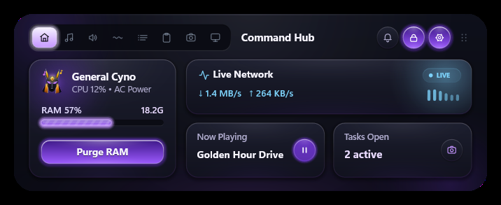
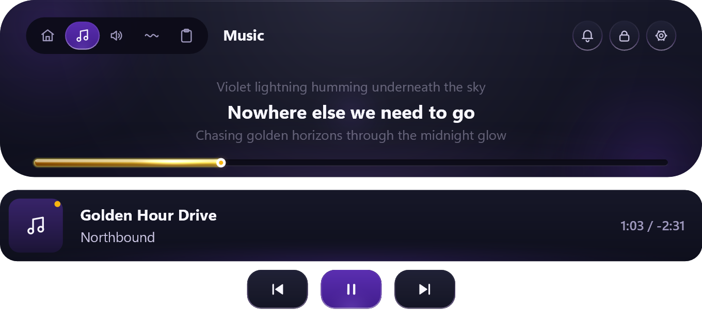
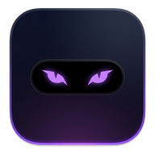

Judgment,
at the top
of your screen.
CyNotch v0.3.0 is a GPU-accelerated Dynamic Island for Windows that actually does stuff. Hardware Direct2D + DirectWrite engine, physical screen-edge & corner portal glow, synced lyrics, live telemetry and a Purge RAM button with main character energy. Built in Rust, shrunk to 1.74 MB, zero installer.

Direct2D GPU render · Command Hub · v0.3.0
- Binary
- 1.74 MB (−56%)
- Expanded frame
- 0.93 ms (9.8× faster)
- Idle CPU
- 0.0% (hibernated)
- Renderer
- Direct2D + DirectWrite
- Stack
- Rust edition 2024
Measured in v0.3.0 GPU Direct2D benchmark suite. OPTIMIZATION_REPORT.md ↗
01 Real shots
Hardware Direct2D captures from CyNotch v0.3.0.
Every image here is rendered directly by CyNotch v0.3.0's hardware Direct2D + DirectWrite engine with calibrated monochromatic Electro Violet surfaces, sub-pixel typography, and live network activity bars. Click a shot to inspect it full-size.
Home base. Mascot, RAM gauge, live network throughput bars, now playing and open tasks in one cohesive obsidian glass strip.
The judgment desk. 8 kernel & user clean areas you can toggle, auto threshold, and a receipt of what got freed.
A clipboard with a roof. Pin links, commands, or dropped files, then click to copy or open in one tap.
Full screen or active window encoded via native Win32 WIC PNG, copied to clipboard and saved to disk.
Rendered directly from CyNotch v0.3.0's Direct2D GPU swapchain with native premultiplied alpha — zero desktop bleed.
02 Memory reduct
Purge RAM, but make it a courtroom.
CyNotch trims each process's working set through K32EmptyWorkingSet, releases the system working set, then tidies the standby list. The screenshot shows the real Mem Reduce view after a run, including the freed amount and the clean areas it touched.
- Working sets
- Active processes get trimmed in place. Nothing gets force-closed, which is very un-Cyno of it.
- System WS
- The kernel's own working set gets released when the engine runs.
- Standby list
- Standby is cache, not trash. Reordering it makes memory give way sooner under pressure.
- Triggers
- Threshold at 70, 80 or 90 percent, or every 5, 15 and 30 minutes. The shot above shows a threshold of 80 percent with the interval disabled.
“Judgment is passed! Excess RAM purged.”Cyno, after a successful purge
Captured from CyNotch v0.3.0 Direct2D engine after a live memory clean.


“Through me, the law is made manifest.”General Cyno · Official Genshin Impact
03 Media & lyrics
Your music, with the words already in sync.
CyNotch listens to the Windows GSMTC session, the same source behind the Windows media flyout. If Windows knows the track, the notch does. LRCLIB supplies the words via zero-crate Win32 WinHTTP, and they follow playback.
- Source
- WinRT GlobalSystemMediaTransportControls. Spotify, YouTube, Chrome and other Windows media players.
- Lyrics
- Live synced lines from LRCLIB across 4 modes (Classic, Karaoke, Minimal, Stream).
- Controls
- Play, pause and 1:1 sub-pixel click-and-drag seek scrubber directly from the notch.
No account. No API key. No "connect your streaming service" quest line.
04 The hub
Small tools, no window tax.
The same notch also holds a quick shelf, screen capture, live CPU and network readings, a Windows notifications bridge with burst-deduplicated Snapchat chime, tasks and system volume. You open one, use it, close it. Nothing multiplies.
Pinned URLs, shell snippets and files, one layer down. Click to copy or open.
Full screen or active window. Native Win32 WIC PNG on disk, click banner to open folder.
05 Benchmark & Visual Diff · v0.2.4.1 → v0.3.0
9.8× faster on GPU. 58% smaller on disk.
In v0.3.0 we replaced the entire CPU software rasterizer (tiny-skia + fontdue + ureq + chrono) with hardware-accelerated Direct2D + DirectWrite bound directly to the DirectComposition DXGI SwapChain, while overhauling the visual design into a borderless monochromatic Electro Violet surface system.
Expanded Frame Time
0.93 ms 9.8× fasterDown from 8.51–10.96 ms CPU raster in v0.2.4.1 (1.08 ms with full GPU flush).
Idle Capsule Render
59.3 µs 7.0× fasterDown from 412.7 µs in v0.2.4.1 (122.6 µs including D3D11 GPU command flush).
Standalone Binary Size
1.66 MB −57.9%Shrunk from 3.95 MB (3,949,056 B) to 1,662,976 B by switching to native Win32 APIs.
Settled Idle CPU
0.0% HibernatedDown from ~2.6% in v0.2.x. High-res pacer and Win32 timers are killed at rest.
Performance & Systems Architecture Comparison
Measured on Windows 11 x64 (`cargo test --release --test perf_bench_d2d` vs v0.2.4.1 `bench_render`).
| Subsystem / Metric | v0.2.4.1 (CPU Raster) | v0.3.0 (GPU Direct2D) |
|---|---|---|
| 2D Vector Engine | CPU tiny-skia software pixmap |
GPU ID2D1DeviceContext + D3D11 Hardware |
| Typography & Emoji | fontdue + GDI fallback |
DirectWrite Color Fonts + Bidi sanitizer |
| Idle Capsule Frame (676×253) | 412.7 µs (CPU) | 59.3 µs CPU / 122.6 µs GPU 7.0× |
| Expanded Heavy Scene (25× glow) | 8.51 – 10.96 ms (CPU) | 0.93 ms CPU / 1.08 ms GPU 9.8× |
Portable Binary (cynotch.exe) |
3,949,056 B (3.95 MB) | 1,742,848 B (1.74 MB) −55.9% |
| Portable ZIP Archive | 1.82 MB | 786 KB (805,236 B) −57.8% |
| HTTP / Time / PNG Stack | ureq + chrono + custom PNG |
Native Win32 WinHTTP + WIC + GetLocalTime |
| Automated Test Suite | 73 tests passing | 132 unit + adversarial + GPU soak tests |
Visual & Interaction Evolution (v0.2.4.1 → v0.3.0)
Every visual surface, motion curve, and audio cue was refined for zero visual friction.
Replaced v0.2.4.1's static inner capsule border cue with a dedicated click-through DirectComposition bezel portal window (32-stop 16bpc float radial violet aura) that hugs Top / Left / Right edges and originates directly from Top-Left / Top-Right corners when corner-docked, with 5th-order smootherstep opening and a 1.2s atmospheric dissipation fade-out.
Unified the gold/orange split buttons from v0.2.4.1 into a cohesive obsidian-violet glass hierarchy, replaced the static Hydration placeholder on Command Hub with a real-time Live Network card + 6 animated activity bars, and eliminated the [FSI]/[PDI] Unicode boxes in Discord toasts.
Added critically-damped spring physics (spring_step) for notch morphs, dock pill glides, and Preferences panes—exclusively gated by Windows Animation Effects—plus Quick (120ms), Normal (240ms), and Slow (450ms) hover dwell presets.
Replaced stepped opacity/blur percentage buttons with live drag sliders, upgraded Music & Volume bars to 1:1 sub-pixel scrubbers with glowing thumbs, calibrated all Preferences tabs to fit unclipped at scroll=0, and added a fixed 25% Snapchat Pop chime with burst deduplication.
Audited and remediated 43 reliability findings: UTF-16 safe bounded WinHTTP, crash-resistant atomic persistence with .bak recovery, DirectComposition device-loss & target recreation, strict Quick Shelf ShellExecuteW executable/ADS/UNC guard, safe Windows notification registry restore, and 132/132 automated + soak tests passing.
Configurable Quick (120ms), Normal (240ms), and Slow (450ms) hover dwell delay, adaptive FPS target, and live Windows Animation Effects gate.
Continuous sub-pixel click-and-drag sliders with glowing thumbs, exact preset highlighting, and right-click context menu directly on the notch.
06 Under the hood
The engineering is the aesthetic.
A Win32 layered window bound to a DirectComposition DXGI SwapChain and painted on the GPU with Direct2D and DirectWrite. WinHTTP and WinRT talk to LRCLIB, your media session, and Action Center. Everything compiles into a single 1.74 MB portable executable.
One 1.74 MB .exe. Rust, Direct2D, and Win32 handle the rest.
- Language
- Rust, edition 2024, MSVC toolchain
- Binary
- 1.74 MB (1,742,848 B), stripped LTO release build (−55.9% vs v0.2.4.1)
- Frame time
- 59.3 µs idle / 0.93 ms expanded (Direct2D GPU)
- Idle CPU
- 0.0% at rest (timers & frame pacer fully hibernated)
- Compositor
- DirectComposition DXGI SwapChain + paired Win11 rounded frosted-blur backdrop
- Vectors & type
- Hardware
Direct2D(ID2D1DeviceContext) +DirectWritecolor fonts - Media & audio
- WinRT GSMTC, CoreAudio, burst-deduplicated 25% Snapchat Pop PCM chime
- Network & OS
- Native Win32
WinHTTP,WICPNG encoder,GetLocalTime,serde_json - Lyrics
- LRCLIB, live synced lines (Classic, Karaoke, Minimal, Stream)
- Release
- v0.3.0, 20 November 2026 (132/132 automated + soak tests passing)
“Migrated rendering to hardware Direct2D + DirectWrite (9.8× faster expanded frames, 55.9% smaller 1.74 MB binary), added physical screen-edge & corner-origin portal glow with 1.2s atmospheric dissipation, Framer-Motion springs, live frosted sliders, and 43 audited reliability, security & GPU recovery fixes. Verified 132/132 automated + soak tests passing.”CyNotch v0.3.0 release notes
PS> git clone https://github.com/muhnbl/CyNotch.git PS> cd CyNotch PS> cargo build --release PS> .\target\release\cynotch.exe
git clone https://github.com/muhnbl/CyNotch.git
cd CyNotch
cargo build --release
.\target\release\cynotch.exe
Tests: cargo test · GPU benchmark: cargo test --release --test perf_bench_d2d -- --nocapture
Performance figures are measured by the repository's automated Direct2D benchmark harness (tests/perf_bench_d2d.rs) and documented in OPTIMIZATION_REPORT.md.
07 Install
Download, double-click, done.
Portable 1.74 MB .exe, or a 786 KB ZIP with the helper scripts. No wizard asking where you want to install yourself.
- 01Download
Grab the portable
.exe. The.zipis there if you want the launcher and autostart scripts. - 02Run it
Double-click. CyNotch parks at the top centre (or left/right edge). Autostart is opt-in, so it will not greet you at boot unless you ask.
- 03Summon it
Ctrl Shift C toggles the notch, or hover the top edge to open the portal glow. That is the whole tutorial.
Windows 10 or 11, x64. No Rust toolchain, no runtime, no installer. The helper scripts in the ZIP only run when you call them.
If it survives your RAM habits, star the repo ↗.
525c6e68841f2ded2d814141c49fdcdc10299ce1eebc78e8a2131ffb4276023c
Open-source portable build (unsigned .exe). Verify the SHA-256 above before running; if Windows SmartScreen prompts on first launch, click More info → Run anyway or build from source. ZIP digest: 2c6a26660f6dd9a7bb2b4b28e88a6337f8ed3c6b3249aab309d339e730c8cded